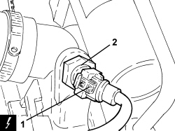

1056B64 COOLANT TEMPERATURE SENSOR ON RADIATOR - R.R.
- Path
- Procedures > 10 ENGINE > 1056 PETROL INJECTION SYSTEM > 1056B MULTI-POINT INJECTION SYSTEM (MPI) > 1056B64 COOLANT TEMPERATURE SENSOR ON RADIATOR - R.R.
- Kind
- repair procedure (removal / refitting; the operation number is the code)
- Applies to
- engines: 1.8; all production periods
- Interactive page
- https://sloeber94.github.io/elrnDB-fCrm/en/#/194003029
Applies to: engines: 1.8; all production periods
 Removing
Removing
 Refitting
RefittingOp. 7055B54 UNDER ENGINE PROTECTION/GUARD - R.R.
Op. 0010T20 ENGINE COOLANT - CHANGE
1. Disconnect the electrical connection for the engine coolant temperature sensor on the radiator.
Description | Connector | |
|---|---|---|
1 | Engine coolant temperature sensor/sender unit |
2. Undo the engine coolant temperature sensor on the radiator and remove it.

Applies to: engines: 1.8; all production periods
Refitting
Removing- Place the engine coolant temperature sensor in its housing on the radiator and tighten it to the recommended torque.
Component | Fastening | dia | Value (daNm) | Validity |
|---|---|---|---|---|
Engine coolant temperature sensor on radiator | - | M12 | 1.7 ÷ 2.0 | 1.8 |
- Connect the electrical connection for the engine coolant temperature sensor on the radiator.